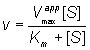

|
|
Enzyme inhibitionA number of substances may cause a reduction in the rate of an enzyme catalysed reaction. Some of these (e.g., urea) are non-specific protein denaturants. Others, which generally act in a fairly specific manner, are known as inhibitors. Loss of activity may be either reversible, where activity may be restored by the removal of the inhibitor, or irreversible, where the loss of activity is time dependent and cannot be recovered during the timescale of interest. If the inhibited enzyme is totally inactive, irreversible inhibition behaves as a time-dependent loss of enzyme concentration (i.e., lower Vmax), in other cases, involving incomplete inactivation, there may be time-dependent changes in both Km and Vmax. Heavy metal ions (e.g., mercury and lead) should generally be prevented from coming into contact with enzymes as they usually cause such irreversible inhibition by binding strongly to the amino acid backbone. More important for most enzyme-catalysed processes is the effect of reversible inhibitors. These are generally discussed in terms of a simple extension to the Michaelis-Menten reaction scheme. Enzyme + Product: Enzyme + Inhibitor =Ki= (Enzyme-inhibitor complex) : Enzyme-substrate + Inhibitor =Ki= (Enzyme-substrate-inhibitor complex) " width="317" height="147"> [1.13] where I represents the reversible inhibitor and the inhibitory (dissociation) constants Ki and Ki' are given by (1.74) and, (1.75) For the present purposes, it is assumed that neither EI nor ESI may react to form product. Equilibrium between EI and ESI is allowed, but makes no net contribution to the rate equation as it must be equivalent to the equilibrium established through: [1.14] Binding of inhibitors may change with the pH of the solution, as discussed earlier for substrate binding, and result in the independent variation of both Ki and Ki' with pH. In order to simplify the analysis substantially, it is necessary that the rate of product formation (k+2) is slow relative to the establishment of the equilibria between the species. Therefore: (1.76) also: (1.77) where: (1.78) therefore: (1.79) Substituting from equations (1.74), ( 1.75) and (1.76), followed by simplification, gives: (1.80) therefore: (1.81) If the total enzyme concentration is much less than the total inhibitor concentration (i.e. [E]0<< [I]0), then: This is the equation used generally for mixed inhibition involving both EI and ESI complexes (Figure 1.8a). A number of simplified cases exist.
Competitive inhibitionKi' is much greater than the total inhibitor concentration and the ESI complex is not formed. This occurs when both the substrate and inhibitor compete for binding to the active site of the enzyme. The inhibition is most noticeable at low substrate concentrations but can be overcome at sufficiently high substrate concentrations as the Vmax remains unaffected (Figure 1.8b). The rate equation is given by: (1.83) where Kmapp is the apparent Km for the reaction, and is given by: Normally the competitive inhibitor bears some structural similarity to the substrate, and often is a reaction product (product inhibition, e.g., inhibition of lactase by galactose), which may cause a substantial loss of productivity when high degrees of conversion are required. The rate equation for product inhibition is derived from equations (1.83) and (1.84). A similar effect is observed with competing substrates, quite a common state of affairs in industrial conversions, and especially relevant to macromolecular hydrolyses where a number of different substrates may coexist, all with different kinetic parameters. The reaction involving two co-substrates may be modelled by the scheme. Enzyme + Product1: Enzyme + Substrate2 =(k+3 forwards, k-3 backwards)= (Enzyme-substrate2 complex) --(k+4)--> Enzyme + Product2" width="312" height="140"> [1.15] Both substrates compete for the same catalytic site and, therefore, their binding is mutually exclusive and they behave as competitive inhibitors of each others reactions. If the rates of product formation are much slower than attainment of the equilibria (i.e., k+2 and k+4 are very much less than k-1 and k-3 respectively), the rate of formation of P1 is given by: (1.86) and the rate of formation of P2 is given by (1.87) If the substrate concentrations are both small relative to their Km values: (1.88) Therefore, in a competitive situation using the same enzyme and with both substrates at the same concentration: (1.89) where and > in this simplified case. The relative rates of reaction are in the ratio of their specificity constants. If both reactions produce the same product (e.g., some hydrolyses): (1.90) therefore: Uncompetitive inhibitionKi is much greater than the total inhibitor concentration and the EI complex is not formed. This occurs when the inhibitor binds to a site which only becomes available after the substrate (S1) has bound to the active site of the enzyme. This inhibition is most commonly encountered in multi-substrate reactions where the inhibitor is competitive with respect to one substrate (e.g., S2) but uncompetitive with respect to another (e.g., S1), where the reaction scheme may be represented by Products: E + S1 = ES1 + I = ES1 --> no product" width="446" height="53"> [1.16] The inhibition is most noticeable at high substrate concentrations (i.e., S1 in the scheme above) and cannot be overcome as both the Vmax and Km are equally reduced (Figure 1.8c). The rate equation is: (1.92) where Vmaxapp and Kmapp are the apparent Vmax and Km given by: and In this case the specificity constant remains unaffected by the inhibition. Normally the uncompetitive inhibitor also bears some structural similarity to one of the substrates and, again, is often a reaction product. Figure 1.8. A schematic diagram showing the effect of reversible inhibitors on the rate of enzyme-catalysed reactions. —— no inhibition, (a) —— mixed inhibition ([I] = Ki = 0.5 Ki'); lower Vmaxapp (= 0.67 Vmax), higher Kmapp (= 2 Km). (b) —— competitive inhibition ([I] = Ki); Vmaxapp unchanged (= Vmax), higher Kmapp (= 2 Km). (c) —— uncompetitive inhibition ([I] = Ki'); lower Vmaxapp (= 0.5 Vmax) and Kmapp (= 0.5 Km). (d) —— noncompetitive inhibition ([I] = Ki = Ki'); lower Vmaxapp (= 0.5 Vmax), unchanged Kmapp (= Km). A special case of uncompetitive inhibition is substrate inhibition which occurs at high substrate concentrations in about 20% of all known enzymes (e.g., invertase is inhibited by sucrose). It is primarily caused by more than one substrate molecule binding to an active site meant for just one, often by different parts of the substrate molecules binding to different subsites within the substrate binding site. If the resultant complex is inactive this type of inhibition causes a reduction in the rate of reaction, at high substrate concentrations. It may be modelled by the following scheme Enzyme + Product: Enzyme-substrate + Substrate =KS= (Enzyme-substrate-substrate complex) " width="317" height="166"> [1.17] where: The assumption is made that ESS may not react to form product. It follows from equation (1.82) that: Even quite high values for KS lead to a levelling off of the rate of reaction at high substrate concentrations, and lower KS values cause substantial inhibition (Figure 1.9). Figure 1.9. The effect of substrate inhibition on the rate of an enzyme-catalysed reaction. A comparison is made between the inhibition caused by increasing KS relative to Km. —— no inhibition, KS/Km >> 100; —— KS/Km = 100; —— KS/Km = 10; —— KS/Km = 1. By the nature of the binding causing this inhibition, it is unlikely that KS/Km < 1. Noncompetitive inhibitionBoth the EI and ESI complexes are formed equally well (i.e. Ki equals Ki'). This occurs when the inhibitor binds at a site away from the substrate binding site, causing a reduction in the catalytic rate. It is quite rarely found as a special case of mixed inhibition. The fractional inhibition is identical at all substrate concentrations and cannot be overcome by increasing substrate concentration due to the reduction in Vmax (Figure 1.8d). The rate equation is given by:  (1.97) where Vmaxapp is given by: The diminution in the rate of reaction with pH, described earlier, may be considered as a special case of noncompetitive inhibition; the inhibitor being the hydrogen ion on the acid side of the optimum or the hydroxide ion on the alkaline side.
This page was established in 2004 and last updated by Martin
Chaplin |
![Vmaxapp = Vmax/(1 + [I]/Ki'])](images/inhibi13.gif)